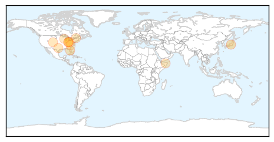

30 Day Trends
Web: 1 alerts, 0 warnings
Twitter: 1 alerts, 0 warnings
Top Articles:
- 0.959
- Don't visit family or friends in hospital if you are unwell
- 0.955
- Mason Petsmart confirms dog flu cases
- 0.955
- Britannica.com
- 0.834
- Health Department cautions consumers over bird flu influenza
- 0.751
- July 24, 2015 Archives
- 0.751
- July 23, 2015 Archives
- 0.751
- July 23, 2015 Archives
- 0.751
- July 23, 2015 Archives
- 0.751
- July 23, 2015 Archives
- 0.682
- Bill offers Wisconsin health care workers flu shot exemption
- 0.647
- Requiring Employees to Get a Flu Shot Could Land You in Court
- 0.564
- Two new cases of dog flu reported in North Carolina
Top Tweets:
-
No tweets found for Jul 24, 2015
Web/News Articles

Tweets
Article Locations
Article Confidences